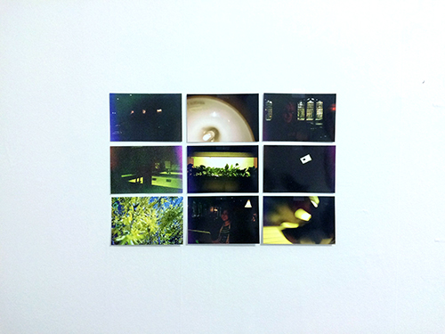
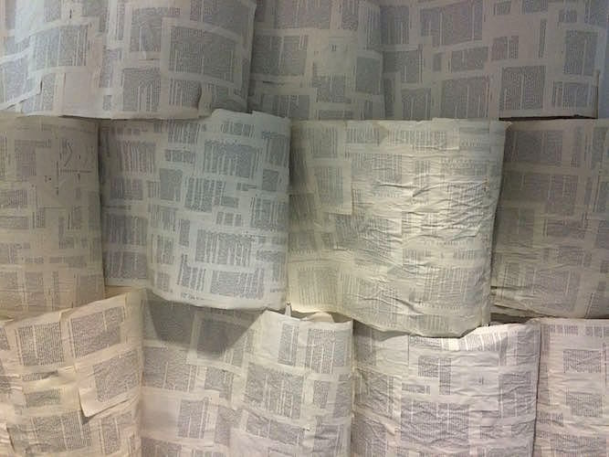

shhhhhhhhhhhh | resin + lined paper | 2015
i amassed secrets from friends and acquaintances who readily gave up a string of close-guarded words. i told them to write down a secret on a strip of paper (i did not read it). then i crumpled and encased them in clear resin. the paper sits inert in its fossilized container. i use this object sometimes as a paperweight, more often as a bookend, and the secrets enveloped by the resin are annulled, merging into the background as a common household object (though albeit a peculiar one) and observers and house guests are never able to recognize the full weight of the object being put to use.
this is not an object that alleviates through a confessional act. secrets as a concept are too contrite and as a mode of self-confession too personal for that kind of symbolism to succeed.
sea pineapples | bristol board | 2012
a repeating shape cut in paper was used to assimilate the structure of an ambiguous white coral-like specimen found at risd's nature lab. though at the time i was thinking more about easily stained and dusty white paper can get.

go away i'm stretching | 35 mm | 2015
an experimentation with the failure of capturing light. the development process was hidden from me; walgreen's photo development centers are kings. regardless i managed to bring out sometimes literal windows of light stark against black. the world i actually live in is much brighter (read: bottom left corner)
taken with a disposable fuji film camera. the hipster in me screamed in joy.

untitled #1 | books, glue | 2015
a mix of psychology books and the greening of america.